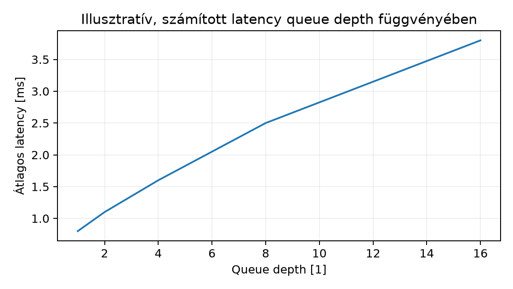

Az előző alfejezetekben ([d046], [d049]) megismertük a Linux I/O
rétegeket és az IOPS, queue, latency alapfogalmait, de egy éles
incidensben a lassú fsync vagy a nem várt write latency még
mindig „valahol a rendszerben” marad. A működtető feladata ilyenkor az,
hogy a tünetet réteghatárok mentén szűkítse, ne egyetlen gyanúsítottra
ugorjon. Ez a labor olyan kontrollált, megismételhető kísérletsorozatot
ad, amelyben egy disposable virtuális lemezen modellezünk egy update-et
és I/O nyomást, majd syscall trace, device counter és cache-beállítás
segítségével azonosítjuk a tényleges átviteli út állapotát.
Definíció (tartóssági és I/O rétegdiagnosztikai
labor). Olyan izolált labor, amelyben egy dedikált, kijelölt
blokkeszközön (a) az alkalmazás syscall szintű kéréseit és a blokkeszköz
device countereit egyidejűleg figyeljük, (b) buffered és direct I/O
mérési tervvel elválasztjuk a page cache hatását a tényleges device
hatástól, (c) egy kis C++ fsync/rename
update-modellt futtatunk a tartóssági szerződés szemléltetésére, és (d)
dokumentáljuk a crash-recovery előfeltételeit, majd a labdiszk
reset/restore utáni adatellenőrzését elvégezzük. A labor outputja nem
benchmark, hanem réteghelyes bizonyíték: measurement jegyzőkönyv,
hipotézis, expected postcondition és rollback.
Scope és előfeltételek. A labor egyetlen Linux
labhostot (lab-vm-01) és egy dedikált virtuális lemezt
használ. Nem foglalkozunk fizikai meghibásodással, RAID-del,
multipath-tal vagy hálózati tárolóval. Az előfeltételek: a [d049]
alfejezetben tanult iostat, /proc/diskstats,
IOPS és queue depth értelmezés, valamint a [d005] alfejezet runbook,
change record és postcondition szemlélete. A hallgatótól nem várunk
kernel forráskód-szintű elemzést, de a mérési réteghatárokat pontosan
kell tudnia.
Az adatút a C++ alkalmazástól a fizikai tároló felé így bontható:
write,
fsync, rename. A syscall belépés és
visszatérés időtartamát a strace -c vagy
strace -T mutatja. Ez a réteg tartalmazza a VFS és a page
cache műveletek nagy részét is buffered módban.write
buffered módban a RAM-ban lévő oldalakba ír, és azonnal visszatérhet; a
tényleges lemezre írás később, a writeback mechanizmuson keresztül
történik. A read cache hit esetén szintén elkerüli a
lemezt. Ha az alkalmazás O_DIRECT flaget használ, a page
cache megkerülése közvetlenül a block layerhez irányítja az I/O-t.virtio-blk)
továbbítja a kérést a virtuális eszköznek.fsync a virtio-blk cache flush parancsát
jelenti, ami a host kernel page cache-éből a backing storage-ra ír.A labor kulcsgondolata, hogy a syscall trace a userspace és a VFS
felől mutatja a kéréseket, a device counter (például
/sys/block/vdb/stat, iostat -dx) pedig a
blokkeszköz tényleges aktivitását. Ha buffered write esetén
a syscall latency alacsony, de a device counter nem változik, akkor a
writeback még nem érte el a lemezt. Ha fsync után a device
counter növekszik, akkor a flush valóban lement a blokkeszköz szintjéig.
Direct I/O esetén a write syscall közvetlenül device I/O-t generál,
ezért a syscall latency és a device counter aktivitás szorosabban együtt
mozog.
A mérési terv három üzemmódot hasonlít össze:
A rétegdiagnosztika eredményét mindig mérési jegyzőkönyvben rögzítjük, ahol a várt és a ténylegesen mért érték külön oszlopban szerepel.
A labor a d005 elv szerint a módosító parancsokat
target, privilege, előfeltétel, ellenőrzés és rollback mellett mutatja.
Az inventory:
lab-vm-01, felhasználó
laboperator UID 1000, sudo csoporttag.LAB-DISK-0, azonosító
/dev/disk/by-id/virtio-lab-data-0, csatolva
vdb-ként./mnt/lab-data./mnt/lab-data alá terjed.Első lépésben a labdiszk előkészítése (target:
lab-vm-01, privilege: sudo, előfeltétel: a lemez létezik és
nincs rajta szükséges adat):
# lab-vm-01, laboperator UID 1000, sudo
ls -l /dev/disk/by-id/virtio-lab-data-0
sudo mkfs.ext4 -F /dev/disk/by-id/virtio-lab-data-0
sudo mkdir -p /mnt/lab-data
sudo mount /dev/disk/by-id/virtio-lab-data-0 /mnt/lab-dataAz update-modell C++ programja a következő. A cél nem új C++ ismeret,
hanem annak bemutatása, hogy a write, fsync,
rename, majd a directory fsync milyen
tartóssági kapcsolatban áll egymással:
// lab_fsync_rename.cpp
#include <fcntl.h>
#include <unistd.h>
#include <cstdio>
#include <cstring>
#include <cerrno>
int main() {
const char* dir = "/mnt/lab-data";
const char* tmp = "/mnt/lab-data/txn.dat";
const char* committed = "/mnt/lab-data/txn-committed.dat";
int fd = open(tmp, O_WRONLY | O_CREAT | O_TRUNC, 0600);
if (fd < 0) { perror("open tmp"); return 1; }
const char* payload = "hello-durable-42\n";
ssize_t n = write(fd, payload, strlen(payload));
if (n < 0) { perror("write"); return 1; }
// write visszatérése még nem garantálja a stable storage-ot.
if (fsync(fd) != 0) { perror("fsync tmp"); return 1; }
if (close(fd) != 0) { perror("close tmp"); return 1; }
// A rename a filesystem namespace-ben atomikus, de a név tartóssága
// csak a directory fsync után garantált.
if (rename(tmp, committed) != 0) { perror("rename"); return 1; }
int dfd = open(dir, O_RDONLY | O_DIRECTORY);
if (dfd < 0) { perror("open dir"); return 1; }
if (fsync(dfd) != 0) { perror("fsync dir"); return 1; }
close(dfd);
return 0;
}Fordítás és futtatás syscall trace-szel, miközben a device countert is figyeljük:
# lab-vm-01, laboperator UID 1000
g++ -Wall -Wextra -O2 -o lab_fsync_rename lab_fsync_rename.cpp
# 1. terminál: 3 másodpercenként device counter
iostat -dx -m /dev/vdb 1 3
# 2. terminál: syscall trace, időtartam nélkül csak a hívások
strace -f -e trace=openat,write,fsync,close,rename ./lab_fsync_renameVárható kimenet (illusztratív, tényleges futtatás nélkül):
openat(..., "/mnt/lab-data/txn.dat", ...) = 3
write(3, "hello-durable-42\n", 17) = 17
fsync(3) = 0
close(3) = 0
rename("/mnt/lab-data/txn.dat", "/mnt/lab-data/txn-committed.dat") = 0
openat(..., "/mnt/lab-data", ...) = 3
fsync(3) = 0Az ellenőrzési feltétel: a strace kimenetben a
fsync hívások megjelennek, és a iostat
kimenetben a vdb oszlop wkB/s vagy
Write értéke a futtatás alatt nullánál nagyobb. Ha a device
counter nem mozdul, akkor a mérési pont hibás (például másik disk, rossz
device név, vagy a virtuális disk hiba).
A cache-hit/miss és direct/buffered mérési terv egy lehetséges
parancssora fio-val (a laborban a tényleges verzió és a
használt ioengine ellenőrizendő, mert az fio support policy
verziófüggő):
# lab-vm-01, laboperator UID 1000, sudo a disk hozzáféréshez
# Buffered random read
sudo fio --name=lab-buffered-read --rw=randread --bs=4k --size=256M \
--iodepth=1 --direct=0 --filename=/dev/disk/by-id/virtio-lab-data-0 \
--output=lab-buffered-read.json
# Direct random read
sudo fio --name=lab-direct-read --rw=randread --bs=4k --size=256M \
--iodepth=1 --direct=1 --filename=/dev/disk/by-id/virtio-lab-data-0 \
--output=lab-direct-read.jsonA mérési jegyzőkönyvben külön oszlopban szerepel a
read_iops, lat_ns_mean és a
syscall trace-ből nyert belépés/visszatérés idő. A várt
eredmény: buffered módban az első olvasás után a page cache nagy része
talál, a direct módban minden kérés lemezre megy; ezért a direct latency
jellemzően nagyobb, de a pontos érték a virtuális disk típusától függ,
így a laborban jelölt mért eredményt kell rögzíteni.
A latency görbét a laborban az fio latency
percentiliseiből vagy saját mérésből számítjuk. Az alábbi ábra egy
hipotetikus, számított scatter-görbét mutat a queue depth függvényében,
4 KiB random write, buffered esetben, ahol a latency = alapkésleltetés +
sorolási overhead. Az értékek nem valós mérésből származnak, csak a
mérési terv értelmezését segítik.

Numerikus táblázat a fenti görbéhez:
| Queue depth | Számított latency [ms] | Megjegyzés |
|---|---|---|
| 1 | 0.80 | alapterhelés |
| 2 | 1.10 | enyhe sorolás |
| 4 | 1.60 | egyre nagyobb várakozás |
| 8 | 2.50 | meredekebb emelkedés |
| 16 | 3.80 | hipotetikus telítődési pont |
A virtuális disk és a fizikai persistence különbségét a laborban
explicit módon dokumentáljuk. A VM-ből kiadott fsync a
virtio-blk cache flush kérést jelenti. Ez a hypervisorban a
backing file fsync-jéhez vezethet, de a VM-ből nézve a
visszatérési kód csak azt jelzi, hogy a kérés eljutott a virtuális
eszközig. Hogy a hypervisor valóban stable storage-ra írt-e, csak a host
oldali méréssel vagy a hypervisor vendor dokumentációjával igazolható.
Ezért a laborban a mérési jegyzőkönyvben külön sorban rögzítjük:
„virtuális disk persistence: assumed based on virtio-blk flush, host
side not verified”. Ez a korlát nem hiba, hanem a mérési határ pontos
jelölése.
1. hiba: A write syscall visszatérése
után a device counter nulla, ezért a writes „nem megy lemezre”.
Tünet: strace mutat write
hívást, de iostat /dev/vdb sor nem
növekszik.
Hipotézis: buffered write esetén a page cache
késlelteti a tényleges lemezírást.
Adatgyűjtés: fusson sync vagy
fsync a fájlra, ezután nézzük a device countert.
Egy változtatás: adjunk fsync hívást a
programba, vagy futtassuk sync parancsot.
Verification: a device counter növekszik, a
fsync megtörténte után. Ha nem, más device-ot nézünk, vagy
a IO scheduler merge-elte a kéréseket.
2. hiba: „A fájl ott van a rename után, tehát kész a
tartós commit.”
Tünet: a rename syscall sikeres, de a
tesztrendszer power loss után a fájl üres vagy hiányzik.
Hipotézis: a rename csak a VFS namespace-ben történt
meg, a directory entry nem volt fsyncelve.
Adatgyűjtés: strace kimenetben a
rename után nincs fsync a directory file
descriptoron.
Egy változtatás: a C++ program nyissa meg a directoryt
és hívjon fsync-et a rename után.
Verification: a strace mutatja a directory
fsync-et, és a dokumentált crash-recovery teszt (valós
power loss nélkül, a háttérben
sync; echo 1 > /proc/sys/vm/drop_caches nem elegendő)
legalább a fájl tartalmának és a név bejegyzésnek az együttes jelenlétét
ellenőrzi.
3. hiba: A laborban a direct I/O mérés sokkal
lassabb, ezért a lemez gyenge.
Tünet: direct read latency nagy, de a
iostat util alacsony.
Hipotézis: a virtuális disk backing file a host oldalon
erősen fragmentált, vagy a virtio-blk queue depth túl
alacsony.
Adatgyűjtés: nézzük meg a fio
lat_ns percentilis görbéjét, a host oldali
iostat-ot (ha elérhető), és a lab storage pool
jellemzőit.
Egy változtatás: növeljük a queue depth-et 1-ről 8-ra,
és ismételjük a direct read mérést.
Verification: ha a latency csökken, a device nem
önmagában lassú, hanem a queue depth kihasználatlan. Ha nem változik, a
backing storage vagy a virtual disk driver valóban bottleneck.
Készítsen Markdown-táblázatot az alkalmazás
write/fsync/rename útjáról a
VM-ben látható blokkeszközig. A táblázatban minden réteghez adja meg,
hogy milyen megfigyelési eszközzel (pl. strace,
/sys/block/vdb/stat, iostat) mit lehet mérni,
és mi az a hiba, amit ott nem lehet észrevenni. A végén foglalja össze,
miért nem elegendő csak a strace kimenet egy tartóssági
hiba diagnózisához.
A lab-vm-01 gépen a rendelkezésre álló
LAB-DISK-0 lemezen végezzen el két mérést
fio-val: 4 KiB random read sorozat 256 MiB terjedelemben,
egyszer --direct=0 (buffered), egyszer
--direct=1 (direct) beállítással. Mindkét futásról
készítsen iostat -dx 1 rögzítést. A mérési jegyzőkönyvben
tüntesse fel a várt cache-hit/miss viselkedést, a mért IOPS és latency
értékeket, valamint a device counter változását. Postcondition: a két
fio kimenet és a két iostat log létezik, és a
jegyzőkönyvben a várt/eltérés oszlop ki van töltve.
Adott a következő jelenség: a C++ update program fsync
hívása átlagosan 120 ms-ig tart, de az iostat alatt a
device util alig 5%. Fogalmazzon meg legalább két hipotézist, válasszon
ki egyet, és hajtson végre egyetlen változtatást a méréssel kapcsolatban
(például O_DIRECT fájl megnyitása, queue depth növelése,
vagy a backing file host oldali ellenőrzése, ha elérhető). Ezután hajtsa
végre a labdiszk reset/restore műveletet: umount, majd a
labdiszk teljes törlése dd-vel, újraformázás
mkfs.ext4, majd remount. Ellenőrizze, hogy a korábbi
tesztfájlok nem léteznek. Postcondition: a labdiszk üres és
újraformázott, a tesztfájlok hiányoznak, a hipotézis tesztelve és a
jegyzőkönyvben rögzítve.
A táblázat minimálisan a következő sorokat tartalmazza:
| Réteg | Megfigyelési pont | Mit mutat? | Mi nem látható? |
|---|---|---|---|
| Syscall / VFS | strace -T -e trace=write,fsync,rename |
hívás, visszatérési idő, return code | page cache state, device queue |
| Page cache / writeback | /proc/meminfo, free,
vm.dirty_* |
dirty oldalak mennyisége | a writeback tényleges lemezig jutása |
| Block layer / device | /sys/block/vdb/stat,
iostat -dx /dev/vdb 1 |
aktivitás, queue, latency az eszköz szintjén | a userbeli fájl és fájlrendszer logikai állapota |
| Virtuális disk | hypervisor oldali ftrace vagy host iostat
(ha hozzáférhető) |
backing file aktivitás | a VM-ből nézve a flush tényleges fizikai tartóssága |
A strace nem elég, mert a page cache találat, a
writeback flush és a device szintű queue nem látszik benne; a lassú
fsync oka lehet a writeback, a device driver vagy a
hypervisor flush.
A mérési parancsok:
# lab-vm-01, laboperator UID 1000, sudo
sudo fio --name=buffered-read --rw=randread --bs=4k --size=256M --iodepth=1 \
--direct=0 --filename=/dev/disk/by-id/virtio-lab-data-0 \
--output=lab-buffered-read.json
sudo fio --name=direct-read --rw=randread --bs=4k --size=256M --iodepth=1 \
--direct=1 --filename=/dev/disk/by-id/virtio-lab-data-0 \
--output=lab-direct-read.jsonIndoklás: a --direct=0 esetben a page cache a második
olvasástól kezdve kiszolgálhatja a kéréseket, ezért az IOPS magas és a
latency alacsony lehet, a device counter alig változik. A
--direct=1 esetben minden olvasás a blokkeszközig megy,
ezért a device counter növekszik, és a latency a device valódi
tulajdonságait tükrözi. A mérési jegyzőkönyv postconditionje: a JSON
outputok megtalálhatók a munkakönyvtárban, az iostat logok
külön fájlban, és a várt/eltérés táblázat kitöltve.
A magas fsync latency és alacsony device util egyik
hipotézise: a virtuális disk backing file flush a host oldalon lassú, de
a host device util nincs a VM iostat-jában mérve. Másik
hipotézis: a C++ program fsync-je előtt a dirty page cache
nagy, és a tényleges flush a host felé több tíz ms-t vesz igénybe, de a
VM device util mérés korlátozott. Egyetlen változtatás: próbáljuk a
fájlt O_DIRECT módon megnyitni, vagy futtassunk egy
fio direct write fsync=1 tesztet; ha a direct
fsync lényegesen gyorsabb, akkor a buffered writeback path a gyanús. A
reset/restore parancsok:
sudo umount /mnt/lab-data
sudo dd if=/dev/zero of=/dev/disk/by-id/virtio-lab-data-0 bs=1M count=100
sudo mkfs.ext4 -F /dev/disk/by-id/virtio-lab-data-0
sudo mount /dev/disk/by-id/virtio-lab-data-0 /mnt/lab-data
test ! -e /mnt/lab-data/txn-committed.dat && echo "data cleared"Postcondition: a labdiszk újraformázott, a mount sikeres, a korábbi update fájl nem létezik, és a jegyzőkönyvben a hipotézis tesztjének eredménye szerepel.
A tartóssági és I/O rétegdiagnosztikai labor egy disposable virtuális
lemezen tanítja meg a rétegenkénti szűkítést. A syscall trace és a
device counter összevetése elválasztja a page cache hatást a tényleges
blokkeszköz aktivitástól. A buffered és direct mérési terv
cache-hit/miss bizonyítékot ad. A kis C++
fsync/rename példa rámutat, hogy a
write visszatérése nem tartóssági garancia, és a
rename utáni directory fsync is szükséges a
crash-recovery előfeltételhez. A virtuális disk flush a hypervisor
backing storage-ig vezet; a VM-ből nézve a fizikai tartósság csak
korlátozottan igazolható. A reset/restore és adatellenőrzés biztosítja,
hogy a labdiszk a kísérlet után tiszta állapotba kerül.
Továbbhasznált definíciók:
fsync a
fájladatot, a directory fsync a rename utáni névbejegyzést
küldi a stable storage felé; ezek nélkül a crash utáni állapot nem
garantált.virtio-blk rétegen keresztül a hypervisor
backing file-ig terjed; a tényleges fizikai tartósság a host storage
rétegtől függ.Forráskiindulópontok ebben a kérésben nem ellenőrzött bizonyítékok, csak további olvasási irányok:
Ellenőrzési hiányok: a laborban bemutatott latency értékek és chart
adatok hipotetikusak, nem valós mérésből származnak. A tényleges
fio, strace, iostat kimenetek a
labhoston futtatandók; az aktuális kernel, virtio-blk és
hypervisor viselkedés support matrixa ellenőrizendő. A fio
pontos verziója és a használt ioengine capability a labor
kezdetén rögzítendő. A virtuális disk host-oldali fsync garantálása a
hypervisor specifikációjából ellenőrizendő, ebben az alfejezetben nem
igazolt.